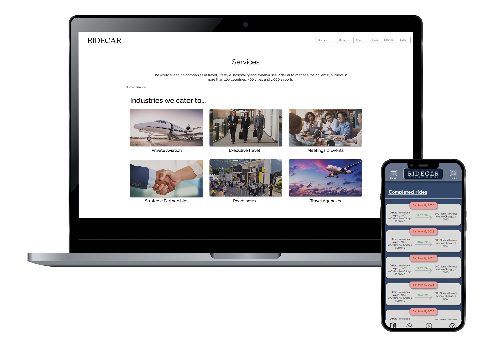
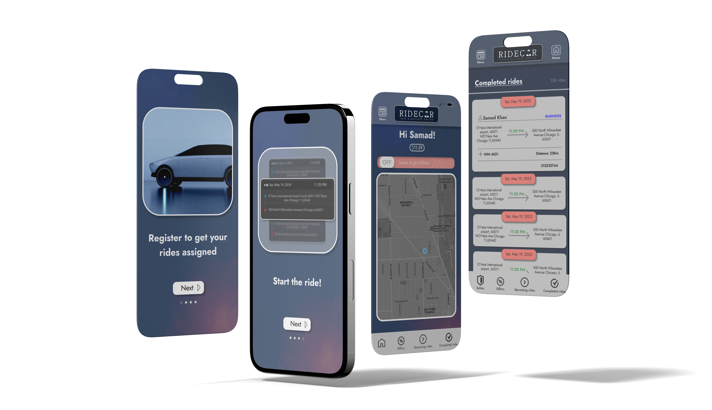

Website Redesign - RideCar Limousine
Redesigning and Migrating from WordPress to Webflow with a focus on accessibility, performance and visual clarity
Project Overview
I led the redesign of RideCar Limousine’s website, migrating it from WordPress to Webflow to enhance responsiveness, information architecture, and accessibility. This included creating a new sitemap, designing a component library, and collaborating with developers for a pixel-perfect build. The project also included SEO enhancement, performance optimization, and visual refinement through interaction design.
Challenge
The original site lacked intuitive navigation, modern visuals, and accessibility compliance. Hidden CTAs, poor mobile responsiveness, and inconsistent structure hurt usability. We had to transform this into a scalable, branded, and inclusive digital experience.
Goals
• Migrate to Webflow with modular design components
• Create a consistent, accessible, modern user experience
• Enhance usability, SEO, performance and engagement metrics
• Build a scalable style guide for long-term growth
Insights Summary
- Accessibility-first design dramatically improved user inclusion and usability.
- Microinteractions and animation brought life to the brand without compromising performance.
- Migrating to Webflow enabled real-time updates and empowered non-developers.
- A scalable style guide ensured long-term maintainability and consistency.
Design Process
1. Discovery & Research
Conducted heuristic evaluation and accessibility audits using WAVE and Axe tools. Identified 36+ WCAG violations including missing alt tags, poor contrast, and focus states. Redundant content and poor responsiveness were flagged for redesign.
Missing Alt Tags
Numerous images lacked descriptive alternative text, creating barriers for screen readers.
Poor Color Contrast
Text and background combinations failed WCAG contrast ratios.
Focus States Missing
Interactive elements lacked clear focus indicators, harming keyboard navigation.
2. Information Architecture
Created a streamlined sitemap addressing various user goals: bookings, corporate inquiries, service area exploration. Card sorting validated logical grouping of pages.
Site Content Structure
Primary Navigation
- Home
- Services
- Business
- City Guide
- Blog
- Help Center
Service Subpages
- Private Aviation
- Executive Travel
- Meetings & Events
- Roadshows
- Partnerships
- Travel Agencies
Support & Legal
- Contact Us
- Careers
- FAQ
- Privacy Policy
- Terms of Service
- Accessibility
Footer Links
- About RideCar
- Testimonials
- Press
- Blog
- Terms of Service
- Privacy Policy
3. Component Library
Designed and documented reusable components in Figma including a responsive nav bar, mega footer, forms, cards, buttons with hover/focus states, and grouped links for high scalability and accessibility.

4. Hi-Fi Prototyping
Designed 35+ screens for desktop and mobile. Prioritized clarity, scannable layouts, strong CTA hierarchy and storytelling with imagery and iconography. Prototypes shared with stakeholders for feedback and iteration.

5. Interactions & Animation
Created 7 interactive graphics using After Effects. Microinteractions (collapsible menus, button transitions, hover states) were added to improve interactivity and engagement while meeting motion accessibility preferences.
Hover over the image to see the effect.
6. Development Handoff
I ensured a smooth Figma to Webflow handoff by clear communication through labelled design assets,
structured design guide and responsive prototype. I set up the Figma prototype, leveraging Dev Mode, and provided detailed documentation.
I also held a handoff meeting with the developers.
I organized rigorous testing across devices and browsers, to minimize developer
bottlenecks, I provided an instructional document for well-structured CMS collections in Webflow.
This approach helped guarantee the final site mirrored the Figma design and was user-friendly.
Accessibility & Performance
Pre-redesign Performance
The original site had a website performance score of 61, with key issues including blocking scripts, non-optimized images, and missing metadata. Accessibility was rated at 66 due to lack of alt attributes, focus indicators, and semantic structure.
Mobile App Prototype for Drivers
A lightweight Android app prototype was also developed to support RideCar drivers. It helps manage ride status, payments, and view rider notes and preferences in real time.
Results & Business Impact
| Metric | Before | After (4 months) | Improvement |
|---|---|---|---|
| Monthly Organic Traffic | ~2,100 | ~2,365 | ⬆️ +12.6% |
| Website Reach | Baseline | +21% | ⬆️ |
| Avg. Session Duration | 1 min 12 sec | 2 min 8 sec | ⬆️ +85% |
| Bounce Rate | 63.4% | 46.9% | ⬇️ -26% |
| Accessibility Score | 66/100 | 100/100 | ✅ Full compliance |
| Booking Conversions (est.) | Moderate | +18% uplift | ⬆️ Post-redesign |
| Mobile compatibility | No | Yes | ✅ Responsive design |
+21%
Website Reach
+12.6%
Traffic Growth
+85%
Avg. Session Duration
-26%
Bounce Rate
100/100
Accessibility Score
+18%
Booking Conversions
Key Takeaways
- Performance and SEO optimization led to tangible business improvements.
- Microinteractions and animations, added polish and engagement without compromising performance or accessibility.
- Accessibility-first approach resolved 36+ compliance issues, achieving a perfect accessibility score of 100.